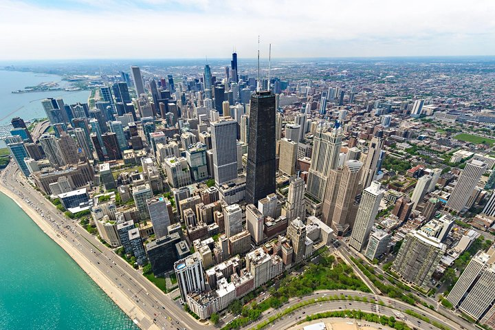

1.5hrs Guided Tour |
1.5hr Guided walking Tour Just book the tour and arrive at the Chicago Architecture Center (CAC) See all the landmark building Covers 3 of the main points Guides take pictures of families Shows skyscrapers and trump tower Mainly shows all of Chicago from the top floor |
 Navy Pier |
very nice wheel that spins Kids and adults can sit in it Fireworks at night at 10:00pm CST Parades in the afternoon |
 Boat Tour |
MUST DO: Boat Tour Shows all of Chicago Shows most of lake Michigan Also you can see Navy Pier |
 Observation Deck |
Can see nice building and lake Guides can take nice Pictures Very nice view
|
 Sphere |
Colors keep changing Nice spot to take photos Also has sightseeing from above Lot of people come here |